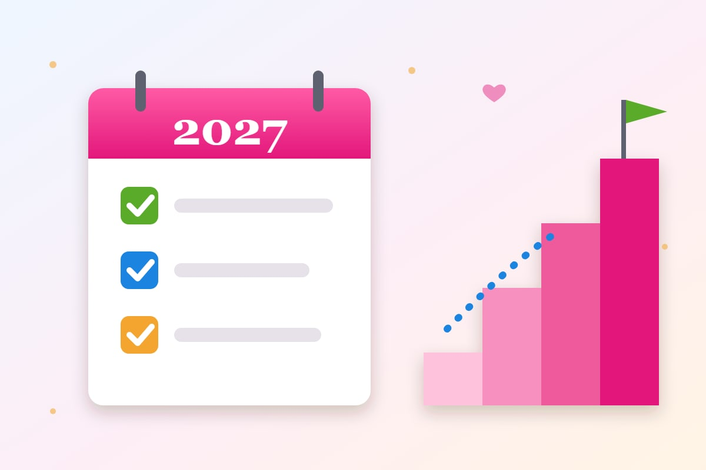
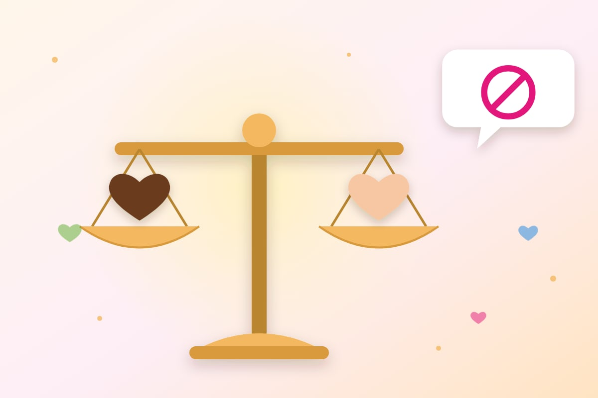

Desenvolvimento pessoal
Metas para o ano novo: como fazer planos que você cumpre
Por Equipe Instituto AMA · Publicado em

Todo fim de ano é a mesma coisa: fazemos uma lista de promessas para o ano que vem. Emagrecer, economizar, ler mais, cuidar da saúde, ter mais paciência. Em fevereiro, boa parte da lista já ficou para trás. Será que o problema é falta de força de vontade?
Na maioria das vezes, não. O problema está no jeito de fazer as metas. Nesta matéria você vai ver o que a ciência diz sobre resoluções de ano novo, um passo a passo para criar metas que funcionam e como manter o ânimo quando der vontade de desistir.
Fazer metas funciona?
Funciona, sim. Um estudo clássico do psicólogo John Norcross, publicado em 2002, acompanhou pessoas durante seis meses. Entre as que fizeram resoluções de ano novo, 46% ainda estavam cumprindo a meta depois de seis meses. Entre as que queriam mudar, mas não fizeram uma resolução, apenas 4% conseguiram.
Outro estudo, feito na Suécia e publicado em 2020, mostrou que a forma de escrever a meta também importa. Metas de aproximação, como “vou comer frutas todos os dias”, tiveram mais sucesso do que metas de evitação, como “vou parar de comer doce”: 58,9% contra 47,1% depois de um ano.
Como fazer metas para o ano novo: passo a passo
- Olhe para o ano que passou: antes de planejar, faça um balanço. O que deu certo? O que você quer deixar para trás? O que aprendeu?
- Escolha poucas metas: de uma a três metas principais. Quem tenta mudar tudo ao mesmo tempo acaba não mudando nada.
- Seja específico: “ler mais” é vago. “Ler um livro por mês” é claro. Use o método SMART: a meta deve ser específica, mensurável, alcançável, relevante e ter prazo.
- Escreva no positivo: diga o que você vai fazer, e não o que vai evitar. “Vou caminhar 30 minutos, três vezes por semana” funciona melhor do que “vou parar de ser sedentário”.
- Divida em pequenos passos: uma meta anual vira metas mensais e semanais. Pequenas vitórias dão motivação para continuar.
- Planeje o “se… então”: pense nos obstáculos e decida antes o que fazer. “Se chover, então caminho em casa com um vídeo.” Esse tipo de plano, estudado pelo psicólogo Peter Gollwitzer, aumenta muito a chance de agir.
- Acompanhe o progresso: marque no calendário, use um caderno ou um aplicativo. Ver o avanço ajuda a manter o hábito.
- Conte para alguém: dividir a meta com um amigo ou com a família cria apoio e compromisso.
Quanto tempo leva para criar um hábito?
Você já deve ter ouvido que bastam 21 dias. A pesquisa mostra outra coisa. Um estudo da University College London, publicado em 2010, acompanhou pessoas criando novos hábitos e encontrou uma média de 66 dias para que o comportamento ficasse automático, com variação de 18 a 254 dias, dependendo da pessoa e do hábito.
O mesmo estudo trouxe uma boa notícia: falhar um dia não atrapalhou a formação do hábito. O importante é retomar.
Por que desistimos das metas?
- Metas grandes demais: sem passos pequenos, a meta parece impossível.
- Metas que não são nossas: quando a meta vem da cobrança dos outros, a motivação acaba rápido.
- Pensamento “tudo ou nada”: um deslize vira motivo para abandonar tudo.
- Falta de plano: desejo sem estratégia não se sustenta. Se você costuma adiar, leia nossa matéria sobre procrastinação.
Não é preciso ver toda a escada. Apenas dê o primeiro passo.
Metas que vão além do pessoal
Além das metas de saúde, dinheiro e carreira, que tal incluir na lista algo que faça bem aos outros? Algumas ideias:
- Fazer trabalho voluntário uma vez por mês. Veja como começar no voluntariado.
- Cadastrar a doação automática da nota fiscal para uma entidade social.
- Reservar um momento por semana para a família, como o Evangelho no Lar.
- Ligar mais para quem está longe e visitar quem está sozinho.
- Praticar a gratidão e o perdão, começando dentro de casa.
Metas assim dão sentido ao ano e costumam trazer uma alegria que dura mais do que qualquer conquista material.
Perguntas frequentes
Quantas metas devo fazer para o ano novo?
O ideal é escolher de uma a três metas principais. Com poucas metas, fica mais fácil manter o foco e a energia para cumpri-las.
O que é uma meta SMART?
É uma meta específica, mensurável, alcançável, relevante e com prazo. Por exemplo: ler um livro por mês até dezembro, em vez de apenas ler mais.
Quanto tempo leva para criar um hábito?
Um estudo da University College London encontrou uma média de 66 dias, com variação de 18 a 254 dias. Falhar um dia não atrapalha, desde que você retome.
Por que desistimos das resoluções de ano novo?
Os motivos mais comuns são metas grandes ou vagas demais, falta de um plano para os obstáculos e o pensamento tudo ou nada, que transforma um deslize em desistência.
Fazer resoluções de ano novo funciona?
Sim. Em um estudo de John Norcross, 46% das pessoas que fizeram resoluções ainda as cumpriam após seis meses, contra apenas 4% das que queriam mudar sem fazer uma resolução.
Fontes e leitura recomendada
- Norcross, Mrykalo e Blagys (2002) – Auld lang syne: success predictors of New Year's resolvers – PubMed
- Oscarsson et al. (2020) – A large-scale experiment on New Year's resolutions – PLOS ONE
- Lally et al. (2010) – How are habits formed – European Journal of Social Psychology
- Gollwitzer (1999) – Implementation intentions – American Psychologist
Leia também
Procrastinar: o que é, causas, efeitos e como superar
Por que adiamos o que é importante e um plano simples, passo a passo, para começar.
Ler matériaO que é PNL (Programação Neurolinguística)?
Programação Neurolinguística: para que serve, como funciona e quais são os benefícios da PNL no dia a dia.
Ler matéria
Racismo e injúria racial: diferença, penas e como denunciar
Entenda a diferença entre racismo e injúria racial, o que mudou com a Lei 14.532/2023, as penas e o que fazer se você sofrer ou presenciar.
Ler matériaGostou desta matéria? Veja outras no blog, conheça nossas referências ou fale com a gente.